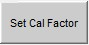
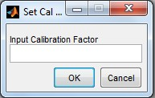
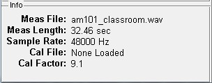

Set Cal Factor

The "Set Cal Factor" button is used to manually set the calibration factor. It will be used by users who do not have a recording of a calibration but have some other way to estimate the calibration level have the option to set the calibration constant directly. This is especially useful when the user is re-analyzing measurements where the calibration constant is already known from loading a calibration file.
The VSLM will prompt for the user to input the calibration factor

If the users clicks cancel the current calibration factor is retained.
NOTE: The user must click "OK" after entering a number, pressing return will not close the window.
If the calibration factor is set manually, the calibration file information is set to none loaded and the calibration factor is displayed in the info section.

Copyright © 2011, Ralph T. Muehleisen
Created with the Freeware Edition of HelpNDoc: Single source CHM, PDF, DOC and HTML Help creation